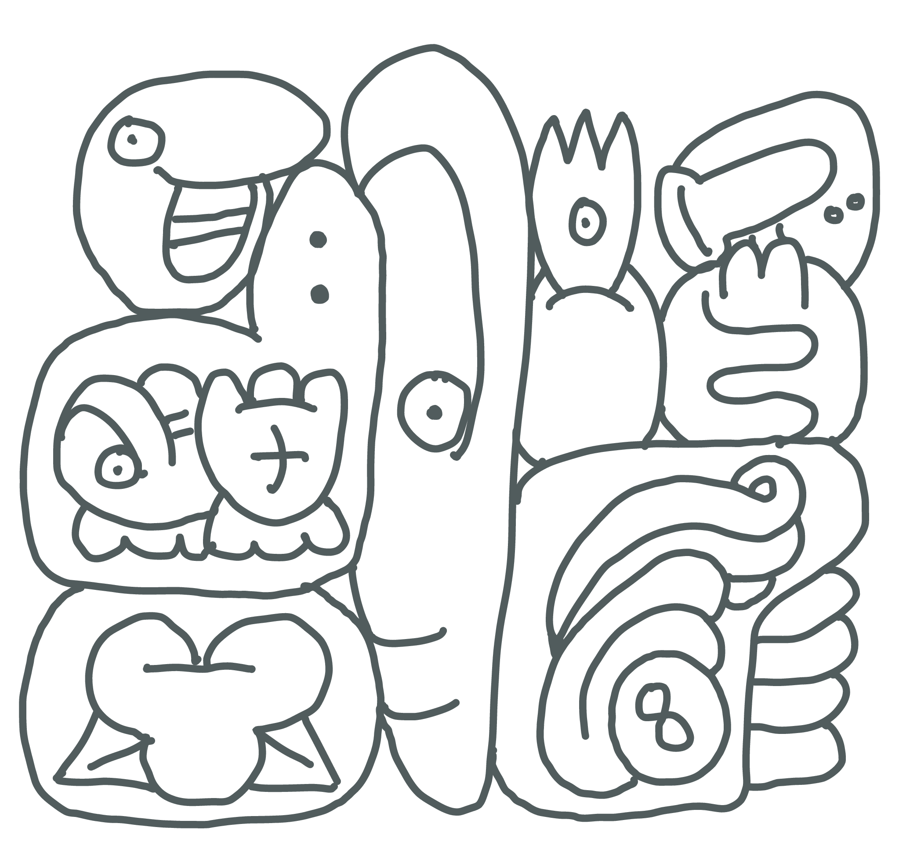

A Tale of Three Constructed Languages
Today, we’re gonna talk about conlangs! Conlang is short for constructed language. I’m a sucker for a good conlang—and a good natlang, to be honest, there’s a reason a big chunk of my degree was in linguistics!
There’s a bunch of famous conlangs. Esperanto is probably the most famous of the old-ass conlangs, going back to 1887. A good half century later, Jerry Tolkien published a whole series of fantasy novels just to popularise z$5h# and his other conlangs—his efforts were at least passably successful. More recently, we got tlhIngan Hol, lekh dothraki and Valyrio udrir, which were all rather successful, and have communities formed around them! Heck, that last one got it’s own DuoLingo course! Unfortunately, one thing all these languages share is that they were created by dudes.
Historically, conlanging has been a wee bit dominated by clueless wealthy white dudes trying to find the perfect language. My favourite example of this is Solrésol, designed by François Sudre in 1827. François tried to create a language using only the symbols do, re, mi, fa, sol, la, and si or ti, in hopes that it could be spoken, painted, played, or whistled—it’s possible he, uh, “took a little inspiration from” one of the many natural whistled languages, which are predominantly from Africa and the Americas. Anyway, he’s got this seven sounds premise, and immediately sets out to create a “taxonomy of all meaning” using only these seven sounds—e.g., all words starting with sol pertain to the arts or sciences, famously one of the seven core categories of meaning. He follows that up with the totally compatible constraint that reversing a word should invert its meaning—e.g., fala means good, and lafa means bad. Presumably, good relates to country and war, and bad is primarily used in industry and commerce? Entirely in character, he tries to sell his language to the army, recommending they use Solrésol to transmit messages using, like, a trumpet, and when that turns out not to work, he tries to sell them some musical canons.
Much as I love roasting Solrésol, that’s not what this blog post is about! Today, I figured I’d talk about some conlangs which were made by women!1
Lingua Ignota
by St. Hildegaard von Bingen
- Lingua Ignota per simplicem hominem Hildegardem prolata
- Created by St. Hildegaard von Bingen in 12th century
- Script called Litteræ Ignotæ
- Glossary of 1011 nouns and adjectives
- Substitute words into Latin phrases
- Meant as a secret language (citation needed)
- Meant to clearly and unambiguously express oneself
- Hildegaard was a German abbess in Rupertsberg 12th century.
- An obvious choice for patron saint of conlangers.
- This is a trend we see in a lot of constructed languages:
- Script maps 1-to-1 to Latin alphabet
- List a bunch of words, mostly nouns
- Grammar of a language you know
- Evidence in her letters indicates others knew of her language.
- First thought: I have to make a font for this. Fortunately, someone had already done that for me!
- Anyway: this is what it looks like.
- Wikipedia cites this as “the only extant text in the language”.
O orzchis Ecclesia, armis divinis praecincta, et hyacinto ornata, tu es caldemia stigmatum loifolum et urbs scienciarum. O, o tu es etiam crizanta in alto sono, et es chorzta gemma.
- When you transliterate that, this is what you get.
O orzchis Ecclesia, armis divinis praecincta, et hyacinto ornata, tu es caldemia stigmatum loifolum et urbs scienciarum. O, o tu es etiam crizanta in alto sono, et es chorzta gemma.
- Curiously, in the entire passage, there’s only five Lingua Ignota words.
| Lingua Ignota | English |
|---|---|
| O orzchis Ecclesia | O measureless Church |
| tu es caldemia stigmatum | you are the fragrance |
| loifulum et urbs scienciarum | of the wounds of nations |
| O, o tu es etiam crizanta | O, o, and you are anointed |
| es chorzta gemma | you are a sparkling gem |
- This all seems VERY religious.
- The glossary is not in any alphabetical order, but in order of hierarchy; of course, God and angels listed are first.
- An obsession with hierarchy is a common trend in early conlangs!
- We could easily find ourselves saying that this language had a religious purpose for Hildegaard, but don’t forget that she’s an 11th century abbess. A lot of things in her life were probably very religious!
Lingae Ignotae bizimonza est.
Láadan
by Suzette Haden Elgin
- Created by Suzette Haden Elign ca. 1985
- Rules for phonology, morphology, grammar, etc.
- Glossary of 1000 words with ways to create new words
- Offered within a work of fiction: Native Tongue
- Meant to test a socio-linguistic hypothesis
- Within the framework of the Sapir-Whorf hypothesis
- Suzette had a Ph.D. in Linguistics, writing two dissertations: one on English, one on Navajo.
- Here’s something infuriating: Suzette started writing Science Fiction to pay her tuition.
- Hypothesis: Existing human languages are inadequate to express the perceptions of women
- A Thought Experiment:
- the Sapir-Whorf hypothesis is true
- existing languages are inadequate for women
- change in language brings societal change
- when offered a women’s language:
- women will adopt it or;
- women will create a better language
- Problems with English:
- words obscure imperfection their meaning does not conform to the reality perceived by women
- words are insufficiently nuanced their meaning glosses over a vast range of distinct female experiences
- there is too much potential for misunderstanding
- The problem is natural languages lack vocabulary for many things that are extremely important to women, making it cumbersome and inconvenient to talk about them.
- Furthermore, they lack ways to express emotional information conveniently. Much of that information had to be carried by body language and was almost entirely missing from written language. This leaves women vulnerable to hostile language followed by the “But all I said was….” excuse; and it restricted women to the largely useless “It wasn’t what you said, it was the way you said it!” defense against such hostility.
| Láadan | English |
|---|---|
| lowitheláad | to feel another’s feelings as if directly |
| radíidin | non-holiday, holiday more work that it’s worth, a time allegedly a holiday but actually so much a burden because of work and preparations that it is a dreaded occasion; especially when there are too many guests and none of them help |
| rathóo | non-guest, someone who comes to visit knowing perfectly well that they are intruding and causing difficulty |
| doroledim | overeating followed by guilt (when food is the only part of your life you have control over) |
- Illustrates English vocabulary being deceitful, and obscuring imperfection.
- Defined negatively, in terms of what they are supposed to be, but they are not, in an attempt to amend the way English does not match the way reality is perceived by Elgin and the women she interviewed.
| Láadan | English |
|---|---|
| osháana | menstruate |
| elasháana | menstruate for the first time |
| zhesháana | menstruate in sync with another woman |
| husháana | menstruate painfully |
| desháana | menstruate early |
| wesháana | menstruate late |
| ásháana | menstruate joyfully |
| Láadan | English |
|---|---|
| bara | anger with reason, with someone to blame, which is futile |
| bana | anger with reason, with no one to blame, which is futile |
| bama | anger with reason, but with no one to blame, which is not futile |
| bina | anger with no reason, with no one to blame, which is not futile |
| bala | anger with reason, with someone to blame, which is not futile |
- Illustrates English vocabulary not being nuanced enough.
| Láadan | English |
|---|---|
| bíi | I say to you as a statement |
| báa | I say to you as a question |
| bíid | I say to you in anger |
| bíida | I say to you in jest |
| … | … |
| wa | what I’m saying is true because I have perceived it |
| wi | what I’m saying is true because it’s self-evident |
- Illustrates English being too imprecise when it comes to emotional information.
- A Brief Feminist Critique of Láadan
- based on the experiences of Suzette and the women whom she consulted
- copies over societal taboos e.g. has no more nuanced words for sex
- assumes traditional model of sex and gender:
- assumes sex is binary
- assumes gender is binary, immutable, determined by sex
bíilan ril le wéhená Láadanth wa
Toki Pona
by Sonja Lang
- Created by Sonja Lang ca. 2001
- Rules for phonology, morphology, grammar, etc.
- Oligoisolating; closed list of 120 words
- Meant as a coping mechanism for depression
- Within the framework of the Sapir-Whorf hypothesis
| toki pona | literal English | English |
|---|---|---|
| telo | “water” | water |
| telo nasa | “crazy water” | alcohol |
| tomo | “house” | house |
| tomo pi telo nasa | "house of | bar |
| crazy water" |
toki pi jan Wen li pona!
| toki pona | English |
|---|---|
| toki | language, speech, to say, to talk |
| jan | person |
| Wen | (that’s my name!) |
| li | (between subject and verb phrase) |
| pona | good |
toki pi jan Wen li pini, la o kama jo e telo nasa!
| toki pona | English |
|---|---|
| pini | end, finished |
| la | (between context phrase and main phrase) |
| o | (imperative) |
| kama | come |
| jo | have |
| e | (between verb and direct object) |
toki pi jan Wen li pini, la o kama jo e telo nasa!
言 ぴ 人 Wen り 終, ら お 来 有 え 水 狂！
言 的 人 Wen 哩 末, 喇 令 到 有 把 水 怪！

toki pona li pona
While the languages I’m discussing were made by women, they still incredibly white, and where applicable very cishet. If you’d like to learn about some conlangs made by nonwhite people, check out Bālaïbalan, Damin and Eskayan—they fucking rule! For a slightly less cishet normative language, check out Polari.↩︎